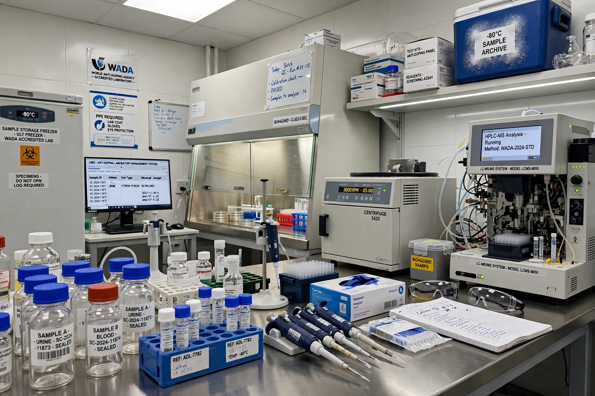

| World Anti-Doping Agency (WADA) | |
| Founded | 10 November 1999, Lausanne, Switzerland |
|---|---|
| Headquarters | Montreal, Quebec, Canada |
| Type | International foundation; public–sport partnership |
| First President | Dick Pound (1999–2007) |
| President | Witold Bańka (since 2020) |
| Key document | World Anti-Doping Code (first adopted 2003) |

The World Anti-Doping Agency (WADA; French: Agence mondiale antidopage) is a foundation created through a collective initiative led by the International Olympic Committee to promote, coordinate, and monitor the fight against drugs in sport internationally. Established in Lausanne in 1999 in the wake of the 1998 Festina affair in cycling, it moved its headquarters to Montreal in 2002. Its funding comes equally from the Olympic movement and governments.
WADA's central instrument is the World Anti-Doping Code, first adopted in 2003 and revised in 2009, 2015, and 2021, which harmonizes rules across sports and countries. Associated standards govern the Prohibited List (published annually), testing, therapeutic use exemptions (TUEs), laboratory accreditation, and results management. Signatories include international federations, national anti-doping organizations (NADOs) such as USADA, and event organizers. The standard sanction for a first anti-doping rule violation is typically a four-year period of ineligibility where intent is shown, reduced for non-intentional or contaminated-product cases.
WADA investigations have addressed state-sponsored doping in Russia: the 2016 McLaren Report documented a system of sample swapping at the Sochi 2014 Winter Olympics, leading to multi-year bans on Russia competing under its own flag and, in 2020, a Court of Arbitration for Sport ruling that WADA partly won and partly lost. WADA has also faced controversy — including disputes with USADA over funding and governance, and criticism of its handling of the 2024 revelations that 23 Chinese swimmers had tested positive for trimetazidine in 2021 but were cleared on contamination grounds by the Chinese agency CHINADA, a decision WADA accepted.
WADA's Foundation Board and Executive Committee are composed equally of representatives of the sports movement and of public authorities. Reform debates concern the agency's independence from both, and the balance of power among contributing governments.